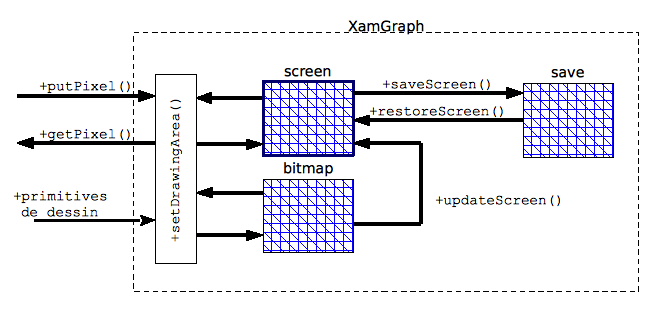

|
|
Synopsys – Interface publique – Installation – Mise en oeuvre – Programmes de démonstration |
XamGraph est une mini-bibliothèque graphique 2D volontairement simpliste, à vocation pédagogique, construite initialement à partir de la librairie Allegro classique version 4 et maintenant basée sur la bibliothèque SDL (Simple DirectMedia Layer) version 1.2 ou supérieure.
XamGraph est disponible en version langage C sous forme d’un ensemble de fonctions, et en langage C++ sous forme d’une classe XamGraph (la version bibliothèque C est néanmoins aussi utilisable dans des applications développées en C++). Les deux versions offrent exactement les mêmes ressources…
Conventions : Une fonction de la bibliothèque C est préfixée avec l’indicatif xam suivi d’une lettre majuscule, la ressource équivalente sous forme de méthode publique de la classe XamGraph commence par une lettre minuscule, sans l’indicatif précédent (notation lowerCamelCase).
Synopsys
#include <xamgraph.h>
Interface publique
Gestion de la fenêtre graphique
XamGraph est capable de gérer trois plans graphiques de tailles identiques : le plan 'screen' visible sur l'écran, un plan 'bitmap' en mémoire, et un plan 'save' permettant de conserver par saveScreen() puis de restituer avec restoreScreen() une copie du plan 'screen'.

L’utilisateur peut choisir de travailler sur le plan ‘bitmap’ ou directement sur la sortie ‘screen’ par l’aiguilleur setDrawingArea(). En règle générale, les traitements effectués sur une image sont réalisés sur le plan 'bitmap', puis ce plan est intégralement projeté sur 'screen' grâce à updateScreen().
La dénomination de plan 'display' représente aussi bien le plan 'screen' que le plan 'bitmap' en fonction de la sélection en cours.
C : int xamCreateGraph( int width, int height, const char* title ) ;
C++: XamGraph::XamGraph( int width = 640, int height = 480, const char* title = XAMGRAPH_VERSION ) ; [constructeur]
Création de la fenêtre graphique avec les dimensions spécifiées, en pixels. La fenêtre créée dispose d’une barre de titre avec le texte précisé en troisième argument, elle est remplie par défaut avec la couleur noire. L’origine du repère de dessin est situé en haut à gauche. Le plan de travail est assimilable à un bitmap de profondeur 32 bits.
[ version C ] : Cette fonction doit impérativement être invoquée la première, avant toute autre ressource de la bibliothèque XamGraph. Elle retourne 0 en cas de succès, ou -1 en cas d’échec.
C : int xamCloseGraph( void ) ;
C++: XamGraph::~XamGraph() ; [destructeur]
Fermeture de la fenêtre graphique.
[ version C ] : Cette fonction est en général invoquée en fin de programme d’application.
C : void xamSetTitle( const char* title ) ;
C++: void XamGraph::setTitle( const char* title ) ;
Change le titre de la fenêtre graphique.
C : void xamResize( int width, int height ) ;
C++: void XamGraph::resize( int width, int height ) ;
Redimensionnement de la fenêtre graphique.
C : void xamClearScreen( int color ) ;
C++: void XamGraph::clearScreen( int color = XAM_WHITE ) ;
Effacement de la fenêtre graphique. La fenêtre est repeinte avec la couleur de fond spécifiée.
C : void xamSetWriteMode( int mode ) ;
C++: void XamGraph::setWriteMode( int mode = XAM_MODE_COPY ) ;
Fixe le mode de dessin. L'argument mode peut prendre une des valeurs :
C : int xamWriteMode( void ) ;
C++: int XamGraph::writeMode() const ;
Retourne le mode courant de dessin : XAM_MODE_COPY ou XAM_MODE_XOR.
C : int xamMaxX( void ) ;
C++: int XamGraph::maxX() const ;
Retourne la valeur d’abscisse maximale de la fenêtre graphique.
C : int xamMaxY( void ) ;
C++: int XamGraph::maxY() const ;
Retourne la valeur d’ordonnée maximale de la fenêtre graphique.
C : void xamSetDrawingArea( int drawing ) ;
C++: void XamGraph::setDrawingArea( int drawing = XAM_DRAWING_SCREEN ) ;
Sélection du plan image de dessin. L’argument drawing peut prendre une des valeurs :
La technique de préparation en mémoire du plan image avant sa projection en une seule fois sur l’écran (mémoire vidéo) peut permettre d’optimiser la vitesse d’exécution des programmes nécessitant des affichages avec forts temps de calcul.
Attention : Dans les 2 cas, les modifications ne sont réellement projetées sur l’écran qu’après un appel explicite à updateScreen().
C : int xamDrawingArea( void ) ;
C++: int XamGraph::drawingArea() ;
Retourne le plan image couramment sélectionné : XAM_DRAWING_SCREEN ou XAM_DRAWING_BITMAP
C : void xamUpdateScreen( void ) ;
C++: void XamGraph::updateScreen() ;
Projection des affichages sur le plan graphique courant. Cette fonction doit être invoquée pour permettre la visualisation des modifications apportées à la scène (dessins, écritures, images…).
C : void xamSaveScreen( void ) ;
C++: void XamGraph::saveScreen() ;
Sauvegarde du contenu de la fenêtre graphique.
C : void xamRestoreScreen( void ) ;
C++: void XamGraph::restoreScreen() ;
Restitution du contenu de la fenêtre graphique préalablement sauvegardé.
Boucle d'événements
C : void xamRun( void ) ;
C++: void XamGraph::run() ;
Provoque l’entrée dans la boucle d’événements. Par défaut, seule la détection de fermeture de la fenêtre graphique est activée, elle entraîne la sortie de la boucle. La détection d’autres événements tels que les actions sur le clavier ou la souris nécessite au préalable l’installation de fonctions d’interception dédiées.
C : void xamQuit( void ) ;
C++: void XamGraph::quit() ;
Permet de forcer la sortie de la boucle d’événements.
C : void xamConnectKeyDownEvent( XamKeyboardHandler handler ) ;
C++: void XamGraph::connectKeyDownEvent( XamKeyboardHandler handler ) ;
Permet de mettre en place, avant l’entrée dans la boucle d’événements, un intercepteur des actions d’appui sur les touches du clavier. La fonction d’interception doit répondre au prototype suivant :
void handler_name(int key, int modifier ) ;
L’argument key permet de recevoir le code de la touche concernée, l’argument modifier le code éventuel des touches telles que Ctrl, Shift, Alt… (les valeurs obtenues dépendent de la machine hôte). L’argument key peut être directement comparé aux constantes prédéfinies par la librairie SDL.
C : void xamConnectKeyUpEvent( XamKeyboardHandler handler ) ;
C++: void XamGraph::connectKeyUpEvent( XamKeyboardHandler handler ) ;
Permet de mettre en place, avant l’entrée dans la boucle d’événements, un intercepteur des actions de relâchement des touches du clavier. La fonction d’interception doit répondre au prototype suivant :
void handler_name(int key, int modifier ) ;
L’argument key permet de recevoir le code de la touche concernée, l’argument modifier le code éventuel des touches telles que Ctrl, Shift, Alt… (les valeurs obtenues dépendent de la machine hôte). L’argument key peut être directement comparé aux constantes prédéfinies par la librairie SDL.
Gestion de la souris
C : void xamConnectMouseMotionEvent( XamMouseHandler handler ) ;
C++: void XamGraph::connectMouseMotionEvent( XamMouseHandler handler ) ;
Permet de mettre en place, avant l’entrée dans la boucle d’événements, un intercepteur des déplacements de la souris. La fonction d’interception doit répondre au prototype suivant :
void handler_name(int x, int y ) ;
Les arguments x et y permettent de recevoir les coordonnées courantes du pointeur de la souris.
C : void xamConnectMouseButtonDownEvent( XamMouseButtonHandler handler ) ;
C++: void XamGraph::connectMouseButtonDownEvent( XamMouseButtonHandler handler ) ;
Permet de mettre en place, avant l’entrée dans la boucle d’événements, un intercepteur des appuis sur les boutons de la souris. La fonction d’interception doit répondre au prototype suivant :
void handler_name(int x, int y, int button ) ;
L’argument button retourne le numéro du bouton concerné. Les arguments x et y permettent de recevoir les coordonnées courantes du pointeur de la souris au moment de l’action sur le bouton.
C : void xamConnectMouseButtonUpEvent( XamMouseButtonHandler handler ) ;
C++: void XamGraph::connectMouseButtonUpEvent( XamMouseButtonHandler handler ) ;
Permet de mettre en place, avant l’entrée dans la boucle d’événements, un intercepteur des relâchements de boutons de la souris. La fonction d’interception doit répondre au prototype suivant :
void handler_name(int x, int y, int button ) ;
L’argument button retourne le numéro du bouton concerné. Les arguments x et y permettent de recevoir les coordonnées courantes du pointeur de la souris au moment de l’action sur le bouton.
Gestion du temps
C : void xamDelay( int msec ) ;
C++: void XamGraph::delay( int msec ) ;
Cette fonction provoque une temporisation calibrée en milli-secondes.
C : void xamConnectTimerEvent( XamTimerHandler handler, int msec ) ;
C++: void XamGraph::connectTimerEvent( XamTimerHandler handler, int msec ) ;
Permet d’installer une base de temps périodique ; la période en milli-secondes est spécifiée par msec, la fonction à déclencher à chaque occurrence est indiquée par handler qui doit répondre au prototype suivant :
void handler_name( void ) ;
C : void xamKillTimer( void ) ;
C++: void XamGraph::killTimer() ;
Stoppe et supprime la base de temps installée par la fonction précédente.
Primitives de dessin
Position courante du crayon
La bibliothèque XamGraph maintient une position courante de tracé (assimilable à la position d’un crayon sur une feuille de dessin), initialisée par défaut à l’origine (0,0) du repère. La majorité des primitives de dessin affectent cette position courante…
C : int xamCurrentX( void ) ;
C++: int XamGraph::currentX() const ;
Retourne l’abscisse de la position courante de tracé.
C : int xamCurrentY( void ) ;
C++: int XamGraph::currentY() const ;
Retourne l’ordonnée de la position courante de tracé.
C : void xamMoveRel( int dx, int dy ) ;
C++: void XamGraph::moveRel( int dx, int dy ) ;
Déplacement relatif de la position courante de tracé.
C : void xamMoveTo( int x, int y ) ;
C++: void XamGraph::moveTo( int x, int y ) ;
Déplacement absolu de la position courante de tracé au point de coordonnées (x,y).
C : void xamPutPixel( int x, int y, Uint32 ) ;
C++: void XamGraph::putPixel( int x, int y, Uint32 color ) ;
Affichage d’un point de couleur color aux coordonnées (x,y). Cette fonction ne modifie pas la position courante de tracé. La couleur est codée par un entier 32 bits non signé (bigEndian 0xRRGGBBAA).
C : Uint32 xamGetPixel( int x, int y ) ;
C++: Uint32 XamGraph::getPixel( int x, int y ) ;
Retourne la couleur du point de coordonnées (x,y). Cette fonction ne modifie pas la position courante de tracé. La couleur est retournée sous la forme d’un entier 32 bits non signé (bigEndian 0xRRGGBBAA).
Points et lignes
C : void xamPoint( int x, int y ) ;
C++: void XamGraph::point( int x, int y ) ;
Trace un point aux coordonnées (x,y) avec la couleur et l’épaisseur courantes. Le point devient la nouvelle position courante de tracé.
C : void xamLine( int x1, int y1, int x2, int y2 ) ;
C++: void XamGraph::line( int x1, int y1, int x2, int y2 ) ;
Trace une ligne entre les points (x1,y1) et (x2,y2) avec la couleur, le style et l’épaisseur courantes. Le point final devient la nouvelle position courante de tracé.
C : void xamLineRel( int dx, int dy ) ;
C++: void XamGraph::lineRel( int dx, int dy ) ;
Trace une ligne relativement à la position courante de tracé, avec la couleur, le style et l’épaisseur courantes. Le point final devient la nouvelle position courante de tracé.
C : void xamLineTo( int x, int y ) ;
C++: void XamGraph::lineTo( int x, int y ) ;
Trace une ligne entre la position courante de tracé et le point de coordonnées (x,y), avec la couleur, le style et l’épaisseur courantes. Ce point devient la nouvelle position courante de tracé.
Rectangles
C : void xamRectangle( int x, int y, int width, int height ) ;
C++: void XamGraph::rectangle( int x, int y, int width, int height ) ;
Dessine un rectangle de largeur width et de hauteur height à partir du point (x,y), avec la couleur et l’épaisseur courantes. Le point d’origine de la figure devient la nouvelle position courante de tracé.
C : void xamFilledRectangle( int x, int y, int width, int height ) ;
C++: void XamGraph::filledRectangle( int x, int y, int width, int height ) ;
Dessine un rectangle plein de largeur width et de hauteur height à partir du point (x,y), avec la couleur courante pour remplissage. Le point d’origine de la figure devient la nouvelle position courante de tracé.
C : void xamCenteredRectangle( int x, int y, int width, int height ) ;
C++: void XamGraph::centeredRectangle( int x, int y, int width, int height ) ;
Dessine un rectangle de largeur width et de hauteur height centré autour du point (x,y), avec la couleur et l’épaisseur courantes. Le point d’origine de la figure devient la nouvelle position courante de tracé.
C : void xamFilledCenteredRectangle( int x, int y, int width, int height ) ;
C++: void XamGraph::filledCenteredRectangle( int x, int y, int width, int height ) ;
Dessine un rectangle plein de largeur width et de hauteur height centré autour du point (x,y), avec la couleur courante pour remplissage. Le point d’origine de la figure devient la nouvelle position courante de tracé.
Polygones
C : void xamPolygon( int numPoints, int* points ) ;
C++: void XamGraph::polygon( int numPoints, int* points ) ;
Dessine un polygone avec la couleur et l’épaisseur courantes. Le tableau points doit contenir numPoints paires de coordonnées représentant les sommets du polygone. La position courante de tracé est déplacée sur le premier sommet du polygone.
C : void xamFilledPolygon( int numPoints, int* points ) ;
C++: void XamGraph::filledPolygon( int numPoints, int* points ) ;
Dessine une surface polygonale avec la couleur courante pour remplissage. Le tableau points doit contenir numPoints paires de coordonnées représentant les sommets du polygone. La figure est automatiquement fermée entre le dernier point et le premier de la liste. La position courante de tracé est déplacée sur le premier sommet du polygone.
C : void xamRegularPolygon( int x, int y, int radius, int faces, int angle ) ;
C++: void XamGraph::regularPolygon( int x, int y, int radius, int faces, int angle = 0 ) ;
Dessine un polygone régulier fermé avec la couleur et l’épaisseur courantes. La figure est centrée sur x et y, de rayon radius ; faces spécifie le nombre de côtés et angle l’orientation en degrés par rapport à l’axe horizontal. La position courante de tracé est déplacée sur le centre du polygone.
C : void xamFilledRegularPolygon( int x, int y, int radius, int faces, int angle ) ;
C++: void XamGraph::filledRegularPolygon( int x, int y, int radius, int faces, int angle = 0 ) ;
Dessine une surface polygonale avec la couleur courante pour remplissage. La figure est centrée sur x et y, de rayon radius ; faces spécifie le nombre de côtés et angle l’orientation en degrés par rapport à l'axe horizontal. La position courante de tracé est déplacée sur le centre du polygone.
Cercles et ellipses
C : void xamCircle( int x, int y, int radius ) ;
C++: void XamGraph::circle( int x, int y, int radius ) ;
Dessine un cercle de centre (x,y) et de rayon radius avec la couleur courante. Le centre du cercle devient la nouvelle position courante de tracé.
C : void xamFilledCircle( int x, int y, int radius ) ;
C++: void XamGraph::filledCircle( int x, int y, int radius ) ;
Dessine un disque de centre (x,y) et de rayon radius avec la couleur courante pour remplissage. Le centre du cercle devient la nouvelle position courante de tracé.
C : void xamEllipse( int x, int y, int xRadius, int yRadius ) ;
C++: void XamGraph::ellipse( int x, int y, int xRadius, int yRadius ) ;
Dessine une ellipse de centre (x,y) et de rayons xRadius et yRadius, avec la couleur courante. Le centre de l’ellipse devient la nouvelle position courante de tracé.
C : void xamFilledEllipse( int x, int y, int xRadius, int yRadius ) ;
C++: void XamGraph::filledEllipse( int x, int y, int xRadius, int yRadius ) ;
Dessine une ellipse pleine de centre (x,y) et de rayons xRadius et yRadius, avec la couleur courante pour remplissage. Le centre de l’ellipse devient la nouvelle position courante de tracé.
Gestion de la couleur
Codage des couleurs
La bibliothèque XamGraph gère les couleurs 24 et 32 bits avec un codage bigEndian (forme 0xRRGGBBAA), mais la surface graphique de dessin est toujours un plan de profondeur 32 bits avec un codage interne big ou littleEndian imposé par la machine hôte.
Du point de vue de l’utilisateur de XamGraph, une couleur est toujours manipulée sous sa forme bigEndian. L’octet de poids faible (canal Alpha) représente la transparence ; la teinte est complètement opaque lorsque cet octet vaut le maximum, soit 255 (ce qui est le cas par défaut).
Une couleur peut être exprimée de différentes manières :
par une valeur entière codée sur 32 bits sous la forme 0xRRGGBBAA (type Uint32),
par des proportions [0..255] de Rouge (R), Vert (G) et Bleu (B), auxquelles peuvent s’adjoindre une valeur de transparence (types Uint8),
sous forme d’une chaîne de caractères de la forme "#rrvvbb", ou les couples rr, vv et bb représentent les proportions précédentes en hexadécimal (le canal alpha est fixé dans ce cas à 255),
sous forme d’une chaîne de caractères de la forme "#rrvvbbaa", ou aa représente en plus la transparence,
par une des constantes symboliques prédéfinies suivantes (teintes opaques) :
XAM_WHITE XAM_BLACK XAM_RED XAM_GREEN XAM_BLUE XAM_MAGENTA XAM_CYAN XAM_YELLOW |
XAM_DARK_GRAY XAM_DARK_RED XAM_DARK_GREEN XAM_DARK_BLUE XAM_LIGHT_GRAY XAM_LIGHT_RED XAM_LIGHT_GREEN XAM_LIGHT_BLUE |
XAM_GRAY XAM_ORANGE XAM_PINK XAM_VIOLET XAM_GOLD XAM_BROWN XAM_IVORY XAM_LAVENDER |
C : Uint32 xamRgb( Uint8 r, Uint8 g, Uint8 b ) ;
C++: Uint32 XamGraph::rgb( Uint8 r, Uint8 g, Uint8 b ) ;
Retourne la valeur entière correspondant à une couleur opaque exprimée sous forme des proportions (0..255) de Rouge, Vert et Bleu.
C : Uint32 xamRgba( Uint8 r, Uint8 g, Uint8 b, Uint8 a ) ;
C++: Uint32 XamGraph::rgba( Uint8 r, Uint8 g, Uint8 b, Uint8 a ) ;
Retourne la valeur entière correspondant à une couleur avec transparence exprimée sous forme des proportions (0..255) de Rouge, Vert, Bleu et Alpha.
C : Uint8 xamRed( Uint32 color ) ;
C++: Uint8 XamGraph::red( Uint32 color ) ;
Retourne la proportion 0..255 de Rouge de la couleur spécifiée sous forme entière.
C : Uint8 xamGreen( Uint32 color ) ;
C++: Uint8 XamGraph::green( Uint32 color ) ;
Retourne la proportion 0..255 de Vert de la couleur spécifiée sous forme entière.
C : Uint8 xamBlue( Uint32 color ) ;
C++: Uint8 XamGraph::blue( Uint32 color ) ;
Retourne la proportion 0..255 de Bleu de la couleur spécifiée sous forme entière.
C : Uint8 xamAlpha( Uint32 color ) ;
C++: Uint8 XamGraph::alpha( Uint32 color ) ;
Retourne la proportion 0..255 du canal Alpha (transparence) de la couleur spécifiée sous forme entière.
C : Uint32 xamStringToColor( const char* str ) ;
C++: Uint32 XamGraph::stringToColor( const char* str ) ;
Retourne la valeur entière de la couleur représentée par la chaîne de caractères de la forme "#rrvvbb" ou "#rrvvbbaa", représentant une couleur opaque ou avec transparence. La fonction retourne la valeur nulle si le format de la chaîne est incorrect.
Couleur courante
C : void xamSetColor( Uint32 color ) ;
C++: void XamGraph::setColor( Uint32 color ) ;
Fixe la couleur courante d’avant-plan utilisée par les primitives de dessin.
C : Uint32 xamColor( void ) ;
C++: Uint32 XamGraph::color() const ;
Retourne la couleur courante d’avant-plan.
C : Uint32 xamBackgroundColor( void ) ;
C++: Uint32 XamGraph::backgroundColor() const ;
Retourne la couleur courante d’arrière-plan ; fixée lors de l’effacement par clearScreen().
Remplissage de zone
C : void xamFloodFill( int x, int y, Uint32 color ) ;
C++: void XamGraph::floodFill( int x, int y, Uint32 color ) ;
Remplissage d'une aire close avec la couleur spécifiée. A partir du point (x,y), tous les points adjacents de même couleur sont modifiés...
Affichage de texte
Sélection d’une police de caractères
C : bool xamLoadFont( const char* fileName, int size ) ;
C++: bool XamGraph::loadFont( const char* fileName, int size ) ;
Sélectionne la nouvelle police de caractères à utiliser. fileName doit indiquer le chemin d’accès au fichier d’extension .ttf (TrueType Font) ou .otf (Open TrueType Font) choisi et size spécifie la taille de la police. En cas d’échec, la fonction retourne false et la police courante reste inchangée.
[ version C ] : le type bool valant false ou true est défini par XamGraph.
C : bool xamDefaultFont( void ) ;
C++: bool XamGraph::defaultFont() ;
Charge une police de caractères par défaut. XamGraph contient sous forme de ressource interne une fonte nommée xamdefaultfont.ttf. Cette police par défaut est automatiquement chargée lors de l'initialisation de la fenêtre graphique, elle est du type largeur fixe de taille 16.
[ version C ] : le type bool valant false ou true est défini par XamGraph.
C : void xamTextOut( int x, int y, const char* text ) ;
C++: void XamGraph::textOut( int x, int y, const char* text ) ;
Affiche le texte passé par l’argument text aligné par rapport au point (x,y) spécifié. L’aspect du texte est tributaire de la fonte active, de la couleur courante d’avant-plan, et de la contrainte d’alignement en cours.
C : void xamPrintf( int x, int y, const char* format, ... ) ;
C++: void XamGraph::printf( int x, int y, const char* format, ... ) ;
Fabrique une chaîne de caractères de la même manière que la fonction standard printf() puis affiche le texte aligné par rapport au point (x,y) spécifié. L’aspect du texte est tributaire de la fonte active, de la couleur courante d’avant-plan, et de la contrainte d’alignement en cours.
La taille de la chaîne est limitée à 255 caractères.
C : int xamTextHeight( void ) ;
C++: int XamGraph::textHeight() ;
Retourne la hauteur maximale en pixels de la police de caractères courante.
C : int xamTextWidth( const char* text ) ;
C++: int XamGraph::textWidth( const char* text ) ;
Retourne la longueur en pixels du texte spécifié, en fonction de la police de caractères active.
Chargement d'images
C : bool xamLoadImage( int x, int y, const char* fileName ) ;
C++: bool XamGraph::loadImage( int x, int y, const char* fileName ) ;
Charge une image à partir d’un fichier de type BMP, GIF, JPEG, PNG, PNM, TGA, TIFF, XPM… dont le chemin d’accès est spécifié par fileName et affiche l’image sur le plan de dessin actif, le coin supérieur gauche de l’image aux coordonnées (x,y). La fonction retourne false en cas d’échec de chargement.
[ version C ] : le type bool valant false ou true est défini par XamGraph.
Gestion des styles
Styles de tracé de lignes
C : void xamSetLineThickness( int thickness ) ;
C++: void XamGraph::setLineThickness( int thickness = 1 ) ;
Fixe l’épaisseur de trait des lignes, rectangles et polygones. L’argument thickness doit être une valeur comprise entre 1 (défaut) et 10.
C : int xamLineThickness( void ) ;
C++: int XamGraph::lineThickness() const ;
Retourne l’épaisseur courante de tracé.
C : void xamSetLineStyle( int style ) ;
C++: void XamGraph::setLineStyle( int style = XAM_SOLID_LINE ) ;
Fixe le style de tracé des lignes et polygones. L’argument style doit prendre une des valeurs suivantes :
C : int xamLineStyle( void ) ;
C++: int XamGraph::lineStyle() const ;
Retourne le style courant de tracé des lignes.
Styles de texte
C : void xamSetTextAlignment( int alignment ) ;
C++: void XamGraph::setTextAlignment( int alignment = XAM_ALIGNMENT_DEFAULT) ;
Détermine le type d’alignement du texte par rapport à la position d’affichage. L’argument alignment peut prendre une des valeurs :
C : void xamSetTextStyle( int style ) ;
C++: void XamGraph::setTextStyle( int style = XAM_NORMAL_TEXT) ;
Fixe le style d’affichage de la police courante. L’argument style est à choisir parmi :
Installation
La machine hôte pour le développement et l’exécution d’applications basées sur XamGraph doit disposer de la bibliothèque partagée SDL, en version 1.2 ou supérieure.
SDL est disponible en téléchargement sur le site www.libsdl.org, les modules supplémentaires requis pour XamGraph sont proposés sur les sites http://www.libsdl.org/projects/SDL_image/ et http://www.libsdl.org/projects/SDL_ttf/.
Linux
Pour Linux, il est conseillé d’utiliser la commande en ligne apt-get install ou à défaut le gestionnaire de paquets. À ce jour, la version SDL requise pour cet environnement reste la 1.2 ; sélectionner les paquets libsdl1.2-dev, libsdl-image1.2-dev et libsdl-ttf2.0-dev ainsi que leurs dépendances. Les fichiers attendus sont normalement installés dans /usr/lib/libSDL* et /usr/include/SDL.
Mac OS
Pour Mac OS version 10.5 ou supérieure, il convient de télécharger et installer la version 2 de SDL sous la forme des trois paquets SDL2-2.0.x.dmg, SDL2_image-2.0.x.dmg et SDL2_ttf-2.0.x.dmg. Les fichiers attendus sont normalement placés sous forme de framework dans /Library/Frameworks/.
Le modèle de Makefile (sous-répertoire template de XamGraph) contient les commandes adaptées à cette version de SDL.
Windows
…not yet implemented…
L'archive XamGraph
XamGraph est disponible sous forme d’archive .zip ou .tar.gz. Elle peut être décompressée dans un répertoire dédié pour être partagée entre plusieurs projets ou directement dans le répertoire de développement de l’application.
Le sous-répertoire template contient des ressources et modèles à importer dans chaque nouveau répertoire d’application basée sur XamGraph.
Le sous-répertoire src contient les fichiers sources de XamGraph ; le lien entre ces fichiers et les sources de l’application est réalisé par paramétrage du fichier Makefile (voir ci-dessous).
Mise en œuvre
Créer un répertoire de travail pour l’application à développer, importer dans ce répertoire une copie du fichier Makefile fourni par la distribution XamGraph dans le sous-répertoire template.
Des modèles de point d’entrée et de squelette minimum sont également disponibles au même endroit.
Lorsque cela est nécessaire, ajouter aux sources de l’application l’inclusion : #include <xamgraph.h>
Makefile
Pour Linux et Mac OSX uniquement : La distribution XamGraph comprend un fichier Makefile utilisable pour automatiser la génération de programmes C/C++ basés sur l’usage de la bibliothèque. Ce fichier de commandes doit être copié dans le répertoire de travail de l’application et paramétré pour celle-ci :
COMPILER : compilateur à utiliser, les valeurs possibles sont gcc ou g++ TARGET : nom de l’application (nom de l’exécutable à générer) VERSION : version de l’application, utilisé pour le nom de l’archive (cible 'dist') XAMRELDIR : chemin relatif vers le répertoire des fichiers source de XamGraph SRC : liste des sources de l’application (hors fichiers XamGraph) INC : liste des fichiers entête de l’application (hors fichiers XamGraph) DEFINES : liste éventuelle de constantes sous la forme -D... AUX : liste éventuelle d’entrées supplémentaires à inclure dans l’archive DESTDIR : répertoire de destination de l’exécutable pour la cible 'install'
Contraintes :
Les cibles disponibles sont les suivantes :
make : fabrication de la version 'release' de l’application make debug : fabrication de la version 'debug' de l’application make clean : suppression des fichiers objets et dépendances intermédiaires make install : copie de l’exécutable vers le répertoire $(DESTDIR) make dist : fabrication d’une archive de nom $(TARGET)_src_$(VERSION).tar.gz
Programmes de démonstration
Validation de l’installation
La distribution XamGraph comprend un sous-répertoire demo qui contient deux petits programmes équivalents de démonstration nommés demo.c et demo.cpp. Ces programmes sont accompagnés de quelques fontes au format TTF et d’images PNG, ils sont principalement destinés à tester le bon fonctionnement de la chaîne de développement, en montrant quelques-unes des possibilités de XamGraph…
Chaque programme de démonstration est accompagné d’un fichier de commandes Makefile correctement paramétré. La génération de l’exécutable est donc simplement obtenue en tapant la commande : make
Tester ensuite le programme : manipulation du clavier, de la souris (cliquer notamment sur le bouton droit !)…
Programme utilitaire
La distribution XamGraph comprend un sous-répertoire xampnm qui contient les sources d’une classe et d’un programme homonymes. Ce programme est une application en ligne de commandes permettant la visualisation d’images PNM (Portable aNy Map) ; des exemples de telles images sont également gracieusement fournis.
Le fichier de commandes Makefile de l’application est correctement paramétré. La génération de l’exécutable est donc simplement obtenue en tapant la commande : make
Syntaxe d’utilisation en ligne de commandes : ./xampnm [-z<zoomfactor>] <filename>
La classe XamPNM est ré-utilisable pour le développement d'applications de traitements d'images. Sa prise en charge est prévue dans le modèle de Makefile dédié à XamGraph.
Et en cadeau, un petit divertissement…
Le sous-répertoire demo de XamGraph contient aussi les sources d’une application de jeu de type reversi. Pour ceux qui ont envie de se confronter à l’intelligence (artificielle) de la machine…
Le fichier de commandes Makefile de l’application est correctement paramétré. La génération de l’exécutable est donc simplement obtenue en tapant la commande : make
Syntaxe d’utilisation en ligne de commandes : ./othello [-n<ialevel>] [-?]
XamGraph-sdl documentation HTML – mise à jour : 14/03/2017